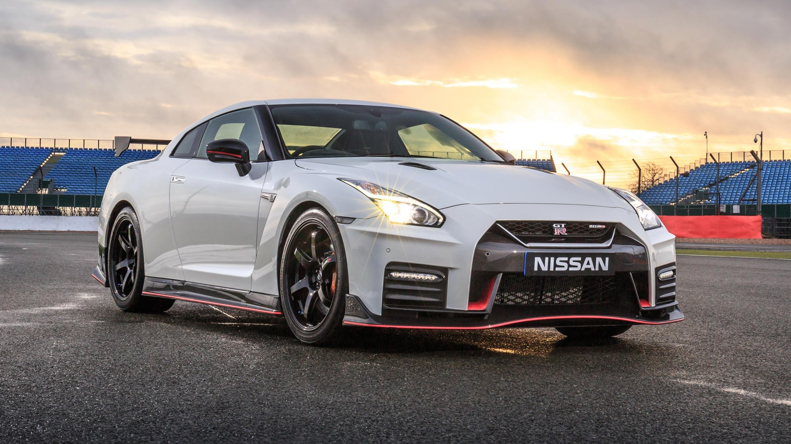
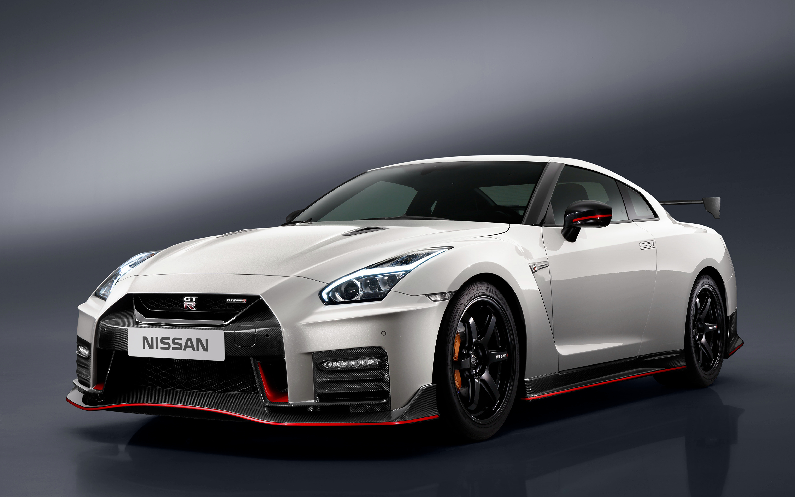
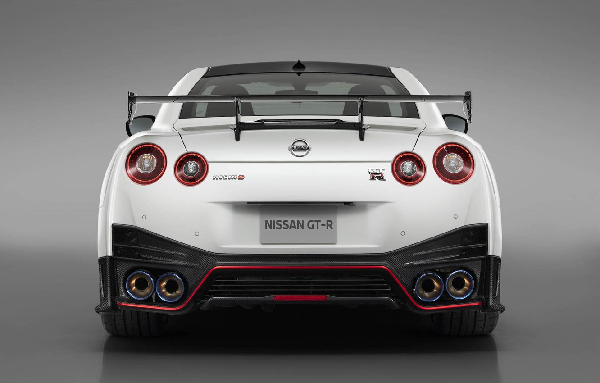

Nissan GTR Nismo
Краткие характеристики
До 100 км/ч: 2.6 сек
Вес: 1650 кг
Мощность: 600 л.с.
МАксимальная скорость: 320 км/ч
Премьера обновленного Nissan GT-R NISMO прошла 27 мая 2016 года в наиболее подходящем для этого месте- на 24-часовой автомобильной гонке в Нюрбургринге. Новинка получила модернизированную подвеску, парочку новых опцией и слегка доработанный дизайн. В первую очередь, хочется отметить измененный передний бампер. Он полностью изготовлен из углеволокна и обзавелся двумя небольшими лентами светодиодных дневных ходовых огней. Решетка радиатора приобрела более угловатые очертания и V-образную хромированную накладку, вторящую, актуальному на данный момент, фирменному стилю японского производителя. Под усилителем можно заметить огромный воздухозаборник, прикрытый черной сеткой с ромбовидными ячейками. В глаза бросается довольно необычный сплиттер с красной каймой. Он обладает слегка вогнутой формой и перенаправляет потоки набегающего воздуха для обеспечения прижимной силы. Что касается прочих аэродинамических элементов, ревизии подверглись почти все части автомобиля: накладки на пороги, большое антикрыло на крышке багажника, диффузор на заднем бампере и даже корпуса задних зеркал. В общем и целом, модель получила ряд приятных и функциональных косметических изменений.
Ниссан Джи-Ти-Ар Нисмо- это спортивное четырехместное купе. Его габаритные размеры составляют: длина 4710 мм, ширина 1895 мм, высота 1370 мм, а колесная база- 2780 мм. Клиренс у модели ожидаемо маленький- всего 105 миллиметров. Такая посадка отлично подойдет для гоночных треков или скоростных магистралей. Она дарует относительно низкий центр тяжести, позволяющий автомобилю ввинчиваться в самые крутые виражи и сохранять устойчивость, даже на высоких скоростях. Что касается самой подвески, то она обладает полностью независимой архитектурой, а также обзавелась несколькими новыми деталями. Производитель установил более жесткие пружины и стабилизаторы поперечной устойчивости. Более того, шасси может похвастаться более производительными адаптивными амортизаторами от фирмы Bilstein. Они способны менять свою жёсткость, в зависимости от дорожных условий и выбранного режима управляющей электроники. По заявлению производителя, обновленная версия проходит заводской трек на 2% быстрее, чем дореформенная модель.
Под капотом Nissan GT-R NISMO практически не произошло никаких изменений. Автомобиль оснащается V-образной бензиновой турбированной шестеркой объемом 3799 кубических сантиметров. От своего заводского аналога, он отличается спортивным впускным коллектором, модернизированной системой зажигания, более производительной выхлопной системой и увеличенным турбокомпрессором от гоночной версии GT3. В итоге, инженерам удалось выжать 600 лошадиных сил при 6800 об/мин и 652 Нм крутящего момента в диапазоне от 3200 до 5800 оборотов коленчатого вала в минуту. Всю мощность переваривает шестиступенчатая преселективная роботизированная коробка передач с двумя сцеплениями. Она транслирует тягу на фирменную систему полного привода ATTESA-ETS, в результате чего, модель может похвастаться потрясающими спринтерскими качествами. Разгон до сотни займет всего 2,5 секунды, а максимальная скорость, в свою очередь, составит 320 километров в час.
Версия NISMO предназначена для истинных фанатов автоспорта. У нее агрессивный и запоминающийся дизайн, отлично подчеркивающий индивидуальность своего владельца и технологическое превосходство этой модификации. Такой автомобиль будет отлично выглядеть как на гоночном треке, так и на дорогах общего пользования. Салон- это царство отличных материалов отделки, спортивной эргономики и высокого комфорта. Даже длительная поездка или агрессивный стиль вождения не смогут доставить водителю лишних неудобств. Производитель прекрасно понимает, что визитной карточкой спорткаров является их двигатель. Именно поэтому, под капотом купе находится мощный и технологичный агрегат, представляющий из себя квинтэссенцию передовых разработок и легендарного японского качества. Nissan GT-R NISMO- способен подарить массу незабываемых эмоций.



